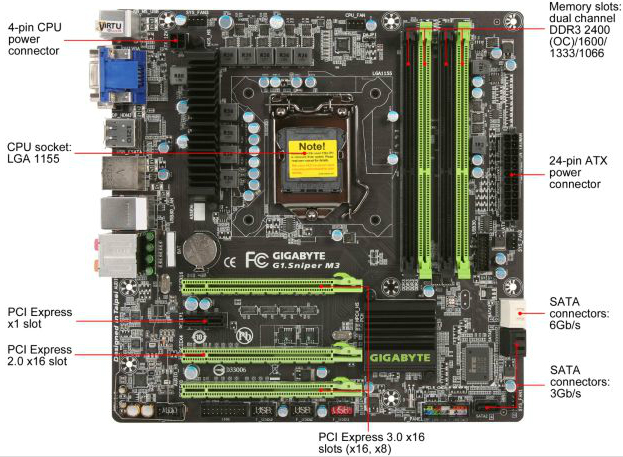

This course teaches computer hardware concepts related to installation, configuration, and upgrading of motherboards,
processors, and memory. Additional topics covered include diagnosing, troubleshooting, and preventive maintenance.
| Web Authoring Tools |
| Index |
| Term 1 |
| Term 2 |
| Term 3 |
| Term 4 |